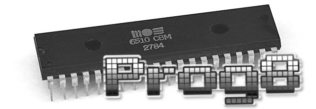
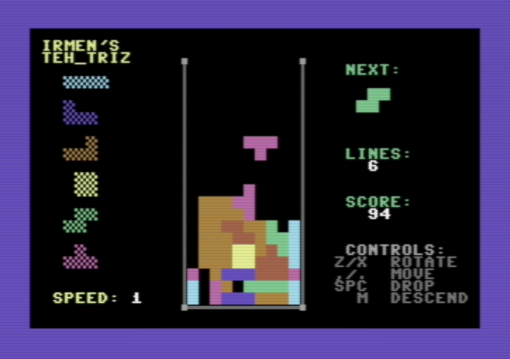
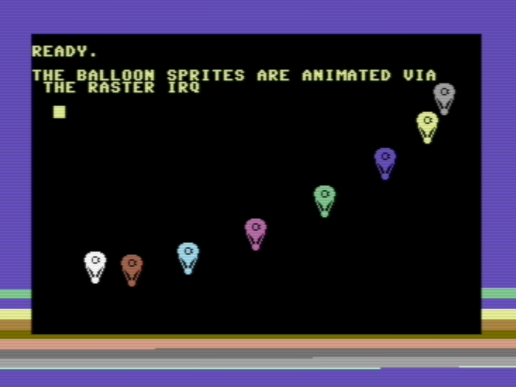
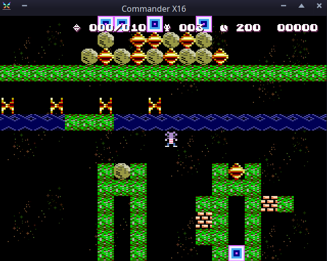

Readable structure, native output
Use types, modules and control flow to organize a program; compile it to native code for the target CPU.

A language for the machines we love
Fast programs with minimal effort.
Prog8 is a cross-compiler for 6502-family and M68000-family computers. Its richest built-in support is for Commodore 8-bit systems and the Amiga, while custom target files extend it to other 6502 hardware. Develop on Linux, macOS, Windows or another modern desktop OS and produce a native program for the machine you choose.
# Commodore 64 - 6502 family
$ prog8c -target c64 game.p8
# Amiga 500 - Motorola 68000
$ prog8c -target amiga500 game.p8
$
↳ Load each native output on its target computer or in a compatible emulator.
01 / Built with Prog8
Real programs from the project: character graphics, raster tricks and a game running on the Commander X16.



02 / Design goals
Prog8 adds expressive language tools without hiding the constraints that make each machine different.
Use types, modules and control flow to organize a program; compile it to native code for the target CPU.
Memory maps, ROM calls and hardware registers remain accessible when the design needs direct control.
03 / Language features
A shared language surface with explicit differences where the CPU, memory map or operating system demands them.
Booleans, signed and unsigned integers, arrays, strings, structs and typed pointers. The pointer type follows the target's 16-bit or 32-bit address width; floating point uses the floats library where supported.
Organize code into named blocks, import reusable modules, and use public or private symbols without forward declarations.
Write target routines with asmsub, or declare ROM and foreign routines with extsub signatures and call them normally. Supported banked calls can switch and restore banks automatically.
Place data in 6502 zero page, align hardware assets, switch banks for selected external calls on supported systems, or request Amiga Chip RAM for DMA data. See the target comparison for each CPU's storage model.
Prog8 tends to produce compact, fast native code through optimization, target-specialized assembly generation and tuned library routines. Use asmsub to hand-tune the hotspots where every cycle counts.
Use a target properties file to describe another machine's CPU, memory layout and startup conventions. Six example configs cover Atari, Foenix F256, NEO6502 and tiny CBM targets.
Want syntax detail without a wall of text? Open only the topics you need.
Source files contain named blocks; subroutines and data are scoped inside them. Imports make library or project modules available.
%import textio
main {
private ubyte lives = 3
sub start() {
txt.print("ready\n")
}
}Declarations put the type first. Tags describe placement or sharing; zero-page tags apply only to 6502 targets.
ubyte[8] @shared sprite_row
uword @requirezp screen_ptr = $0400
pointer current_address = $0400Use structured loops and when for fixed choices. on ... goto and on ... call provide indexed jump-table dispatch.
when mode {
0 -> draw_text()
1 -> draw_bitmap()
else -> draw_fallback()
}
bool done = false
repeat {
update_frame()
if done break
}defer runs cleanup on every normal exit from a subroutine. A routine can also return several values for parallel assignment.
sub read_frame() -> bool, uword {
ubyte file = open_file()
defer close_file(file)
return false, 0
}
bool failed
uword bytes
failed, bytes = read_frame()Loops read like intent: for iterates ranges, arrays and strings, do ... until reads naturally, and unroll trades size for speed.
for i in 7 downto 0 plot(i, row)
do poll() until ready
unroll 8 write_next(color)swap needs no temporary variable, and a routine's multiple results can initialize variables directly.
swap(tile_x, tile_y)
ubyte cols, rows = txt.size()String literals can target the machine's encodings, and status-flag branches map straight to CPU instructions.
str greeting = sc:"HELLO"
str suits = petscii:"♠♥♣♦"
if_cs handle_carry() ; branch on the CPU carry flagRegister annotations map parameters to CPU registers. On 6502, clobbers can declare modified registers. M68K asmsub does not accept a clobbers clause; preserve its calling convention and save/restore any callee-saved or reserved registers you use. A5 is the frame pointer, and AmigaOS calls use A6 as the library base.
C64 / 6502:
main {
asmsub set_border(ubyte color @A) {
%asm {{
sta $d020
rts
}}
}
}Amiga / M68000:
main {
asmsub set_color(ubyte color @D0) {
%asm {{
move.w d0,$dff180
rts
}}
}
}extsub gives a ROM or external routine a checked call signature. On supported targets, an @bank annotation can add automatic bank switching.
main {
extsub $FFD5 = LOAD(ubyte verify @A, uword address @XY) clobbers() -> bool @Pc, ubyte @A, ubyte @X, ubyte @Y
sub read_from_rom(ubyte verify, uword address) -> bool {
bool failed
failed, void, void, void = LOAD(verify, address)
return failed
}
}Amiga's custom chips can DMA from Chip RAM. Put a copper list or other DMA data in an Amiga-specific block.
copperdata {
%option amiga_chipram
uword[48] copper_list
}A target properties file describes a CPU, memory map, launcher and libraries; a new machine also needs a system library. Custom M68K targets use pointer_size = 4, link ELF with vlink, and cannot emit Amiga Hunk; that output is for built-in Amiga targets.
cpu = 6502
pointer_size = 2See the target configuration guide for how to select and complete a custom machine definition.
Optimization is staged: constant folding, unused-code removal, expression and statement simplification, strength reduction, subroutine inlining, then backend-specific IR or assembly peepholes. M68K also allocates virtual values to hardware registers and spills when needed. For cycle-critical code, inspect the generated assembly and use asmsub to tune only the hot path. Compare builds with -noopt and -compareir.
long, enums, 2D arrays, unions, named struct-field initializers and memory-mapped struct instances.continue, in value/range tests, short-circuit logic and if-expressions.@split word arrays, CX16 virtual registers, compile-time %assert and the arena allocator.| Topic | Prog8 strength | What C needs |
|---|---|---|
| Arithmetic | Byte, word and long have fixed widths, and calculations stay in the declared type. No hidden promotions means predictable results and compact code. | Integer promotion and implementation-defined widths can widen operations and add conversion code. |
| Memory layout | Variables are statically allocated and zero-initialized. Zero-page placement and @split word arrays are language-level controls tuned for 6502 addressing. |
Storage and word-array layout are left to the compiler and runtime; zero-page placement usually needs linker or assembly work. |
| Control flow | when selects on values, on ... goto emits jump-table dispatch, in tests ranges directly, and defer handles cleanup. |
switch, comparisons and cleanup are written by hand; a jump table often needs explicit tables or compiler extensions. |
| Subroutines | Multiple return values, multi-assignment, and nested subroutines that read parent variables. On 6502, parameters are static, so calls need no stack-frame setup. | Functions return one value; multiple results need structs or output parameters, and calls typically set up a stack frame. |
| Hardware access | extsub declares ROM calls with a checked signature and emits direct calls with no stubs. asmsub binds arguments to registers, and @bank can switch banks automatically. |
ROM calls need headers, function-pointer casts or assembly stubs, and bank switching is manual. |
| Data and pointers | Typed pointers, structs and memory-mapped struct instances describe data and hardware registers with the same syntax. | Pointers and structs are available, but hardware access relies on volatile and platform headers. |
Prog8 usually produces much better code than cc65, though more advanced C compilers are also available for the C64 and Commander X16. More in the manual.
04 / Included libraries
The compiler ships with focused modules for common retro-computing tasks, with availability tailored to each target.
textio, math, floats, strings, buffers and sorting; shared APIs can keep a program portable across targets.
Target-specific bitmap and sprite helpers, including Commander X16 gfx_lores and gfx_hires.
wavfile and adpcm helpers, alongside playback modules adapted to each machine's sound hardware.
Use CBM Kernal routines through extsub; AmigaOS modules and custom-chip helpers are covered below.
See the library reference for the per-target module list; some modules exist only on particular machines.
05 / Targets
Choose a target to select its CPU backend, memory model, libraries and output format.
C64 · C128 · PET · Commander X16
.prg program assembled by 64tass. Disk images such as D64 must be made with external tools, not Prog8.Amiga 500 · Amiga 1200
Variables are statically allocated. Regular subroutine calls do not create stack frames for locals; use @zp to prefer zero-page storage or @requirezp to require it.
Ordinary subroutine locals and parameters live in stack frames, while block-level and shared data remain static. Pointers are 32-bit.
Built-in targets also include qemu68k, a virtual machine, and configurable targets. Capabilities and library coverage vary by target.
06 / Version 14
The Amiga 500 and 1200 targets are the headline: the new M68K backend brings AmigaOS library integration and direct custom-chip access. The same release adds features for data layout, cleanup and portable code.
Import a Prog8 module, call its routines, use named NDK-derived constants and structures, and let the compiler handle the M68K calling convention. Drop to custom-chip helpers when the OS is not the right layer.
Use dos, graphics, intuition, icon and utility directly. Startup opens the core libraries where available (utility needs Kickstart 2.0+); exec is always available and optional libraries can be opened on demand.
Most bindings are generated from Amiga NDK includes, with constants, structure types and hand-written helpers. APIs whose structure types are not modelled use pointers, keeping the boundary explicit.
Use OS-friendly modules for screens and windows, or take over the display with custom, playfield, copper and blitter. Mark DMA buffers for Chip RAM with %option amiga_chipram.
AmigaOS library modules are available on amiga500 and amiga1200, not qemu68k. Read the Amiga library guide.
&Point p = $c000.%assert verifies constant assumptions before assembly.defer. Deferred cleanup now also runs when the program exits or start() returns.arena. The pointer type follows the target's 16-bit or 32-bit width, and arena adds a simple bump allocator.07 / Build path
Keep the same editing setup. Let the target flag choose the CPU and its output path.
Prog8 source, shared modules and target-specific routines.
Runs on Linux, macOS, Windows and other modern desktop systems.
64tass for 6502, or vasm for Amiga M68K.
Load the native file in an emulator or on retro hardware.
Looking for complete programs? Browse the Prog8 examples on GitHub.
08 / Editor support
Syntax highlighting and language-server support are available without locking Prog8 to one IDE.
A community-contributed VS Code extension provides Prog8 syntax highlighting. Separate syntax definitions are also in the project's syntax-files directory for Vim, Kate, JetBrains IDEs, Sublime Text, Notepad++ and nano.
The prog8-language-server works with VS Code and other LSP editors, offering parse diagnostics, completion, hover, navigation, signature help and refactoring tools. It parses source but does not replace compiler type-checking or code generation.
09 / Clankers 🤖
The repository ships agent skills and a review prompt, so an AI assistant can follow the language instead of guessing.
prog8-coder covers syntax, data types, standard library guidance and common pitfalls. For inline assembly, asm6502-coder and m68k-coder add 64tass and vasm syntax, register conventions and calling rules.
/review-p8The harness-neutral review prompt looks for redundant code, missed builtin and library routines, performance pitfalls, hot paths that want asmsub, and modernization opportunities. It reports concrete replacements and waits for your approval before changing anything.
Read AI assisted development in the manual, or browse the agent skills and review prompt.
Please use generative AI responsibly.
10 / Community
Prog8 began as a C64 language. Its X16 target and community developed alongside the Commander X16; today, most Prog8 use and activity still center on that machine but are expanding. The CBM family remains the strongest built-in target family, though C128 and PET support is more limited. Custom target files extend the compiler to other 6502 computers. The Prog8 Users Group (P8UG) shares projects, examples and tips, and connects through Discord with occasional video meetups. The X16 Discord also has a small Prog8 channel; GitHub issues are the main route for project questions and contributions.